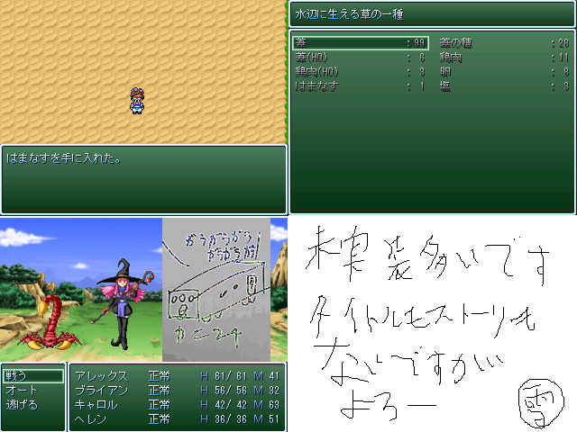

| 「レッツ蒐集(ver.0.10)」 | |
|---|---|
| 作者 | 雪兎 |
| 作者コメント | この企画を知ったのが今日(2006/5/5)の昼だったので、超突貫工事でした。 なので、オープニングやストーリーが一切ないです。もちろんエンディングも。 でばっぐ？何それ、おいしいの？ バージョンアップしたらどこかにうpしておきますね レッツ蒐集でぐぐるとよろし 実装：海岸、町への道 マップだけ実装：町のほとんど、家畜小屋 未実装：森、火山 こんな超駄作ですがよろしくお願いします。 |
| 作者過去作 | 無し |
| 作品URL | ｨｪｧ 作品をダウンドードする |